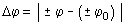

Desplazamiento angular El desplazamiento angular es el valor absoluto de la diferencia de las posiciones actual e inicial (Con sus signos):  El desplazamiento suele expresarse como vueltas dadas por el móvil contando desde su posición inicial (No es forzosamente lo mismo que el número de pasos por el origen) |